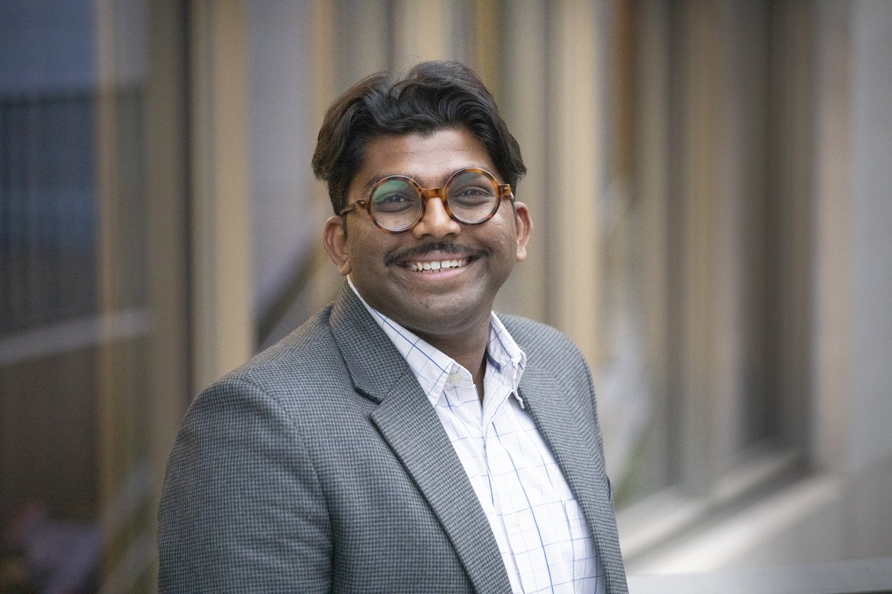

About

Sangeeth Selvaraju is a Policy Fellow (Sustainable Finance) at the Grantham Research Institute on Climate Change and the Environment, London School of Economics and Political Science. He works on sustainable finance and on industrial decarbonisation in emerging markets and developing economies, with a particular focus on India and ASEAN.
His research interests include private capital mobilisation for emerging economies, hard-to-abate sectors such as steel and aluminium, and the link between trade and climate policy, particularly EU–India relations. He has also worked on public finance, leadership and the just transition.
Career
Before joining LSE, Sangeeth was a research associate in the climate policy department at the German Institute for Economic Research (DIW Berlin), working on industrial decarbonisation and climate finance. Earlier roles included the Mercator Research Institute on Global Commons and Climate Change (MCC), where he worked on the effectiveness of energy efficiency policies through a quantitative meta-analysis; Apricum Cleantech Advisory in Berlin; and the Council on Energy, Environment and Water (CEEW) in New Delhi.
Education
Master's degree in public policy, Hertie School.
MSc in Finance, London School of Economics.
PhD in Economics, TU Berlin (in progress).
Profiles
Grantham Research Institute profile CETEx profile LinkedIn Google Scholar